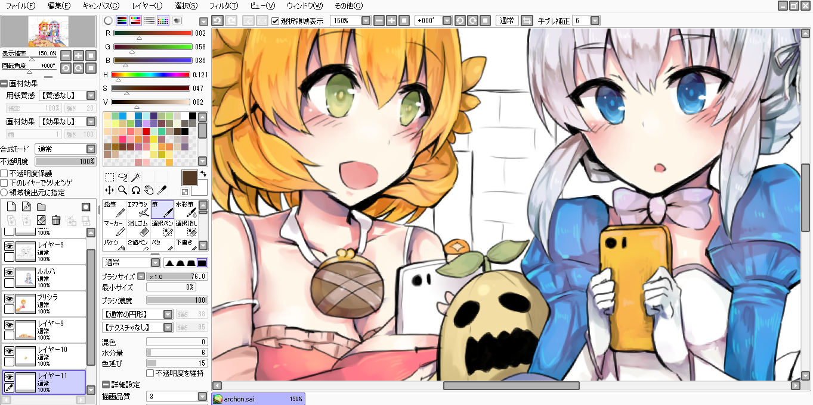
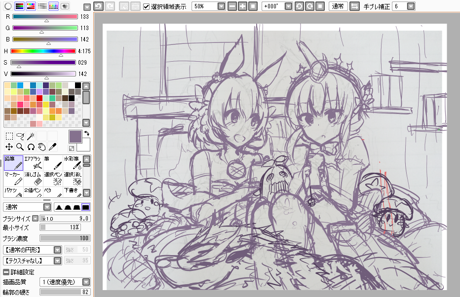
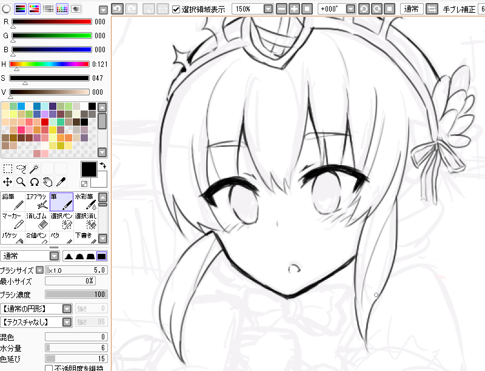
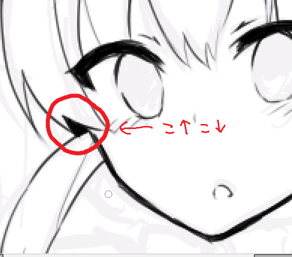
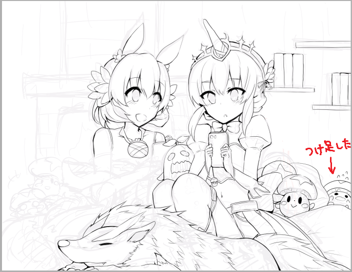
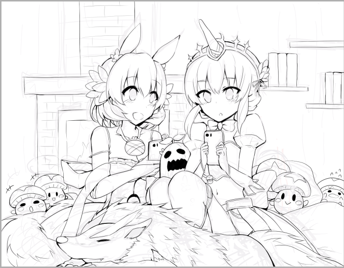

SAiデジタルメイキング！（ログレス）

1.ラフ、下書き
目次
・ラフ、下書き←今ここ
・肌、髪
・目、服
・もふもふ系
・他モンスター、背景
こんにちは、砂辺うまひとです。
デジタルメイキングやります！！！
はいっ。
デジタルメイキングやれー、っていう要望が長いこと溜まっていたので、作ってしまいました。
要望してくださった方々、本当にありがとうございました&お待たせいたしました；；；
できるだけ丁寧に解説していくつもりなので、よろしければご覧ください！(｀・ω・´)（1年前の色鉛筆メイキングはこちら）

空き時間に描いた落書きをスキャンして取り込み、その上にレイヤーを重ねて下書きをしました。
下書きはSAIの鉛筆（R133,G113,B142※)で描いてます。
※色を作るとき、私はRGBバーをいじって色を作っています。
RGBバーは赤色(red),緑色(green),青色(blue)の高さや低さを直感的に上げ下げして色を作れるので、重宝しています。（カラーサークルは難しくて使えません。。。）
画像の左上の（R133,G113,B142)の3つの数値だけで特定の色が規定できます。気になる色がありましたら数値をお盗みください！
（ちなみに、画像の右上にある「手ぶれ補正」という機能が便利ですよっ。
SAIだけでなく他のペイントソフトにも、手ぶれ補正機能が備わっているはずです。
デジタルだと思い通りに線が描けない、っていう人は少しいじってあげると綺麗な線が描けると思います。）

下書きの上にレイヤーを作り、筆（黒）で線画をがりがり描いていきます。
（SAIでの筆の設定は、画像を参照してください。ほとんどSAIの鉛筆と書き味が変わらないような設定にしています）
なるべく、目立たせたい部分や影の部分ははっきりと線を描くようにしています。あと、顎周りや目の上部の線は、いつも太くして強調しています。
線が細かい部分（画像ではリボンの部分）はできるだけ細い線で描くようにしています。

線と線の間の隙間が狭いときは、思い切って黒に塗りつぶしているときもあります。
だ、だって影の色を作るの面倒くさいんだｍ塗りつぶすことによって顔の輪郭が少しすっきりはっきりする気がするんです。
（画像の中に見える"〇"はただのマウスポインタなので気にしないでください。）

線画を描いていく段階で、何か物足りないなぁと思ったら、積極的に下書きを無視して付け足していきます。
遠近感的に、奥に行く物ほど線を薄く……を若干意識しています。

線画完成。
この後めちゃくちゃ下書きレイヤーを消去した。
次へ>>
イラスト に戻る